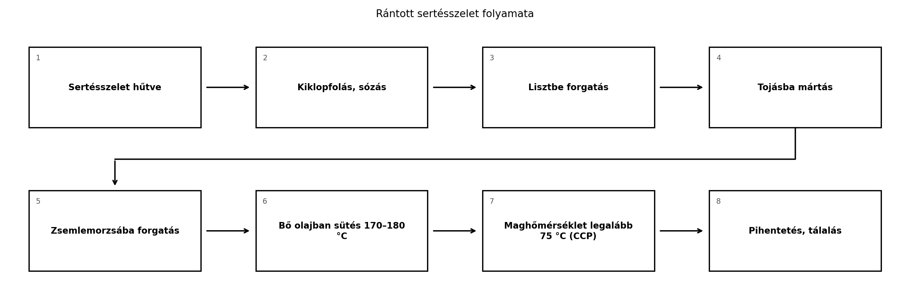

A sertéshús a magyar konyhában naponta előfordul: vasárnapi sült karaj, étlapi rántott szelet, grilltálon sertésborda. A hibás sütés azonban kétfelé hibázik: a nyers hús közepe élelmiszer-fertőzést okozhat, a túlsütött hús pedig száraz, rágós. Ebben az alfejezetben azt tanulod meg, hogyan süsd a sertéshúst egészben és frissen, hogyan ellenőrizd a maghőmérsékletet, és miért nem elég a hús színére hagyatkozni.
Képzeld el a tankonyhát: az előkészítő asztalon hűtött sertésszeletek, mellette a panírozási sor – liszt, tojás, zsemlemorzsa. A sütőben egészben sült karaj pirul, a maghőmérő a legvastagabb részben ül. A szakács nem a panír színét figyeli, hanem a maghőmérsékletet: a hús külseje szép lehet, a közepe még nyers.
A maghőmérséklet elvét a hőközlés módjai és a maghőmérséklet alfejezet vezette be. Most a sertéshúsra alkalmazzuk.
Definíció.
- Egészben sütés: nagyobb sertéshúsdarab (karaj, tarja,
csülök, malac) mérsékelt hőfokon, hosszabb időn át sütve.
- Frissen sütés: vékonyra vágott vagy kiklopfolt
sertésszelet rövid időn, magasabb hőfokon, kevés vagy bő zsiradékban
sütve.
Szabály.
A sertéshús fogyaszthatóságát nem a színe, hanem a maghőmérséklete dönti
el. A biztonságos maghőmérséklet legalább 75 °C, és a
húst a magyar konyhai gyakorlat szerint mindig átsütve fogyasztjuk.
(ellenőrizendő: NÉBIH-útmutató / hatályos HACCP-terv)
Higiénia.
A nyers sertéshúst hűtve, 5 °C alatt kell tárolni, és a hűtési láncot a
sütés megkezdéséig meg kell tartani. A nyers hús vágódeszkája, kése és
edénye elkülönítendő a kész ételétől.
Kritikus pont.
A sütés kritikus szabályozási pont (CCP). A maghőmérőt a hús
legvastagabb részébe, csonttól elfelé kell szúrni. Ha a mért érték nem
éri el az előírt 75 °C-ot, a húst tovább kell sütni, és a mérést
dokumentálni kell.
Allergén.
A natúr sült sertéshús alapvetően glutén- és tojásmentes, de a páclevek,
fűszerkeverékek, rántásos mártások és panírok allergént vihetnek be. A
bundázott sertésszelet glutént és tojást tartalmaz.
| Jellemző | Egészben sütés | Frissen sütés |
|---|---|---|
| Húsdarab | nagyobb, egyben (karaj, tarja, csülök, malac) | vékony szelet (rántott, cigány, borda) |
| Hőfok | 160–180 °C sütő (ellenőrizendő) | 170–180 °C olaj vagy magas sütőhőfok |
| Idő | hosszú (kb. 1,5–4 óra) | rövid (kb. 5–12 perc) |
| Ellenőrzés | maghőmérséklet, pihentetés | maghőmérséklet, panírszín, pihentetés |
| Példák | sült karaj, tarja, csülök, malac | rántott szelet, cigánypecsenye, sertésborda |
Összefüggés.
A sütőből kivett húst pihentetni kell. A pihentetés alatt a húsrostok
visszaszívják a nedvességet, a hús szaftosabb marad, és a maghőmérséklet
néhány fokot emelkedhet. Pihentetés nélkül a felvágott hús sok levet
ereszt.
A sertéshúsrészeket a vágóállatok húsrészei: marha, borjú, sertés, bárány alfejezetben ismerted meg. Itt a sütési technológiára koncentrálunk.
Sült karaj egészben.
A sertés hosszúkaraj sovány hús, ezért könnyen kiszárad. A zsírréteget
rajtahagyjuk, de éles késsel bevagdossuk, hogy a sütés közben ki tudjon
olvadni. A húst sóval, borssal, zúzott fokhagymával és köménnyel
bedörzsöljük. Forró zsiradékban minden oldalát körbepirítjuk, majd
160–180 °C-os sütőbe tesszük. A maghőmérőt a legvastagabb részbe
szúrjuk. Legalább 75 °C maghőmérsékletnél kivesszük, 5–10 percig
pihentetjük, majd a rostjaira merőlegesen szeleteljük.
A képsor 2. képe a leggyakoribb hibát mutatja: a bevágás csak a zsírrétegben legyen, mert a húsba vágott résen át a lé kifolyik, és a sovány karaj kiszárad. Az 5. képen a maghőmérő oldalról, a legvastagabb rész közepébe kerül – a vékony végen mért érték megtévesztő. A HTML-kiadásban a lépéseket egyenként lejátszhatod.
Sertéstarja.
A tarja zsírosabb, márványozottabb, ezért omlósabb lesz. Alacsonyabb
hőfokon, kb. 160 °C-on sütjük, hogy a zsír megolvadjon. Fűszerezhető
fokhagymával, köménnyel, pirospaprikával. A maghőmérséklet itt is
legalább 75 °C.
Sertéscsülök.
A csülök sok kötőszövetet tartalmaz, ezért elő kell főzni vagy hosszan
sütni. Gyakori eljárás: a pácolt csülköt gyöngyöző vízben előfőzik, majd
sütőben ropogós bőrűre sütik. A hús akkor jó, ha csontról leválik, a
bőre pedig ropogós.
Malac egészben.
A malac sütése nagyobb vállalás. A bőrt be kell vagdosni, a húst sóval,
fokhagymával bedörzsölni. Alacsony hőfokon, 140–160 °C-on hosszan, kb.
3–5 órán át sütjük, közben sós vízzel locsoljuk, hogy a bőr ropogós
legyen. A maghőt a comb legvastagabb részében és a lapockában is
ellenőrizzük; legalább 75 °C szükséges. A malacot pihentetés után
bontjuk, tálaláskor a bőrt külön kínáljuk.
Megjegyzés.
A malac egészben sütése ünnepi menüre, nagyobb rendezvényre való.
Tankonyhán gyakran csak malaclapockát vagy csülköt sütnek; az elv
ugyanaz.
A frissen sütött sertésszeleteknél a húsdarab vékony, a hő gyorsan átjárja. Két fő módszer van: kevés zsiradékban magas hőfokon (natúr szelet, cigánypecsenye, sertésborda), illetve bő zsiradékban panírozva (rántott sertésszelet).
Rántott sertésszelet.
A klasszikus magyar étel sertéskarajból vagy -combból készül. A húst
felszeleteljük, kiklopfoljuk, sózzuk. A panírozási sorrend: liszt,
tojás, zsemlemorzsa. Bő, 170–180 °C-os olajban sütjük. A panír
aranybarna, a hús maghőmérséklete legalább 75 °C. Sütés után
papírtörlőre szedjük, rövid ideig pihentetjük.
A folyamatot az alábbi ábra foglalja össze:

Cigánypecsenye.
A tarja- vagy karajszeletet kiklopfoljuk, sózzuk, fokhagymás-paprikás
zsiradékkal bekenjük, és forró zsiradékon mindkét oldalán frissen
sütjük; bevagdalt, kisütött szalonnával (kakastaréj) és a fokhagymás
pecsenyelével tálaljuk (ellenőrizendő: üzemi receptúra). A
maghőmérséklet itt is legalább 75 °C. Az étel neve és összetétele
üzletenként változhat, az üzemi receptúra az irányadó.
Sertésborda.
A csontos karajszeletet (bordát) kiklopfoljuk, fokhagymával
tűzdelhetjük, sóval, borssal, köménnyel ízesítjük. Serpenyőben vagy
rácson frissen sütjük, kevés alaplével vagy vízzel locsolgatva készre. A
borda tálalásakor a pecsenyelé (jus) fontos.
A frissen sütött húsok gyakori hibája, hogy a vastag szeletet túl forró olajban sütik: a panír barnul, a hús közepe nyers marad. Ezért a szeletvastagságot egyenletesre kell alakítani, és maghőmérőt kell használni.
Példa.
10 adag rántott sertésszelethez 1200 g kiklopfolt, csont nélküli
sertésszeletet akarunk előkészíteni. Az előkészítési veszteség
(csontozás, zsírtalanítás, szeletelés, kiklopfolás) 20%. Mennyi nyers
csontos karajt kell beszerezni?
A rántott sertésszelet technológiai lapjában ebből a nettóból indulunk ki.
Biztonsági korlát. Bő olajban sütésnél olajsütőben az olajszint a MIN és MAX jel között legyen; jelölés nélküli edényt legfeljebb kb. egyharmadáig (legfeljebb félig) tölts (tanulási érték; ellenőrizendő: gyártói utasítás), a szeletet szárazon, magadtól elfelé engedd be; az olajat ne hevítsd 180 °C fölé, ne hagyd felügyelet nélkül. Ha az olaj meggyullad, zárd el a hőforrást, takard le fedővel vagy tűzoltó takaróval, illetve használj F osztályú tűzoltó készüléket – vizet soha ne önts rá.
Adagszám: 10 adag.
Adagsúly: 140 g sült.
Anyaghányad-táblázat
| Nyersanyag | Mennyiség 10 adagra | Megjegyzés |
|---|---|---|
| Sertésszelet (kiklopfolva, csont nélkül) | 1200 g | nettó, sertéskaraj vagy comb; az előkészítési veszteség beszámítva |
| Finomliszt (BL55, ellenőrizendő) | 120 g | allergén: glutén |
| Tojás | 5 db | átlag 50 g/db (ellenőrizendő); allergén: tojás |
| Zsemlemorzsa | 220 g | allergén: glutén |
| Só | 20 g | |
| Őrölt fehér bors | 5 g | |
| Étolaj a sütéshez | 800 ml | sütőközeg, nem adag |
Allergének.
Glutént tartalmazó gabonafélék (liszt, zsemlemorzsa) és tojás. A
panírozó anyagokhoz tiszta edényt használj; a nyers húshoz külön deszka
és kés kell.
Eszközök és gépek.
Hűtött nyers húshoz külön kés és deszka, húsklopfoló, panírozó tálcák,
sütőedény, olajhőmérsékletet mérő hőmérő, maghőmérő, habszedő,
papírtörlő, tálalótál.
Előkészítés. 1. A hűtött sertésszeletekről a
zsírréteget levágni, a szeleteket egyenletesen kiklopfolni, sózni. 2. A
panírozási sort előkészíteni: liszt, felvert tojás, zsemlemorzsa. 3. A
sütőolajat felmelegíteni 170–180 °C-ra
(ellenőrizendő: HACCP-terv / olajhőmérsékleti útmutató).
Elkészítés. 1. A szeletet lisztbe forgatni, a
felesleget lerázni. 2. A tojásba mártani, a felesleget lecsepegtetni. 3.
Zsemlemorzsába forgatni, finoman rányomkodni, hogy a panír tapadjon. 4.
A forró olajba óvatosan, magunktól elfelé fektetni a szeletet; a panír
ne égjen. 5. Oldalanként sütni, amíg a panír aranybarna és a hús
maghőmérséklete legalább 75 °C (ellenőrizendő). 6.
Papírtörlőre szedni, rövid ideig pihentetni, tálalni.
Kritikus pontok.
A sütés CCP: maghőmérséklet legalább 75 °C. A hűtött nyers húst a
panírozásig 5 °C alatt tartani. A sütőolaj állapotát (szín, szag,
füstölés) ellenőrizd, és a HACCP-terv szerint cseréld
(ellenőrizendő). A tojás héja fertőzést okozhat, ezért
kézmosás szükséges. A kész ételt legalább 63 °C-on tartsd, vagy 2 órán
belül tálald/hűtsd le 5 °C alá
(ellenőrizendő: HACCP-terv).
Készentartás és tálalás.
A rántott szeletet azonnal tálaljuk, hogy a panír ropogós maradjon.
Köret: petrezselymes burgonya, rizs, friss saláta; díszítés:
citromszelet.
Minőségi követelmények.
Aranybarna, ropogós panír, amely nem válik el a hústól; a hús teljesen
átsült, nem rózsaszín; az állag omlós, a felszín nem szivacsos
olajos.
Tipikus hibák és javításuk.
- Panír leesik: pontatlan panírozás vagy a szeletet villával szurkálták.
Megoldás: pontos sorrend, fakanállal/spatulával forgatás.
- Olaj túl hideg: a panír sok olajat szív. Megoldás: 170–180 °C
olajhőmérséklet.
- Olaj túl forró: a panír ég, a hús nyers marad. Megoldás: hőfok
csökkentése, maghőmérő.
Változatok.
Sertésbordából is készíthető; gluténmentes változatban gluténmentes
liszt és morzsa, tojásmentes változatban növényi panírozó
használható.
Az anyaghányad tanulási példa; az üzemi anyaghányad-gyűjtemény és a hivatalos receptúra a mérvadó.
Cél: egészben sütés, maghőmérséklet-ellenőrzés, pihentetés, szeletelés.
Eszközök és anyagok.
Sütő, sütőedény, húsvilla, maghőmérő, kés, vágódeszka. Anyagok 10
adaghoz: 1,5 kg sertéskaraj (egészben, nyersen), 50 g sertészsír, 4
gerezd fokhagyma, 15 g só, 5 g őrölt kömény, 3 g őrölt bors.
Biztonsági korlát.
Forró sütővel dolgozol; a húst húsvillával, ne kézzel mozgasd. A hűtött
húst ne hagyd hosszú ideig szobahőmérsékleten. Ezt a műveletet
tankonyhán vagy oktatói felügyelettel gyakorold; otthon csak a leírt
biztonsági feltételekkel.
Higiéniai előkészület.
Kézmosás; a nyers hús részére elkülönített deszka. A sütőt előmelegítjük
160–180 °C-ra (ellenőrizendő).
Lépések. 1. A sütőt előmelegítjük. 2. A sertéskarajt letisztítjuk, a zsírréteget meghagyjuk, bevagdossuk. 3. Sóval, borssal, zúzott fokhagymával, köménnyel bedörzsöljük. 4. Forró zsiradékban minden oldalát körbepirítjuk. 5. Sütőedénybe tesszük, a maghőmérőt a legvastagabb részbe szúrjuk. 6. 160–180 °C-on sütjük; legalább 75 °C maghőmérsékletnél kivesszük. 7. Pihentetjük 5–10 percig, majd rostokra merőlegesen szeleteljük.
Ellenőrzési pontok.
A hús kérge szép barna; a maghőmérséklet elérte a 75 °C-ot; a hús
pihentetés után nem ereszt sok levet; a szelet vágásfelülete
egyenletesen átsült.
Dokumentálás.
Sütési hőfok és idő, maghőmérséklet, pihentetési idő a
HACCP-naplóba.
A frissen sütött sertésszelet minősége: aranybarna, ropogós, nem zsíros; a hús fehér, szaftos, nem rózsaszín. A maghőmérséklet legalább 75 °C. Az egészben sült karaj: a kéreg barna, a hús omlós, fűszeres, a belső maghő legalább 75 °C; a pihentetés után a szelet vágásfelülete nedves.
Hiba: A rántott szelet közepe nyers.
Ok: túl vastag szelet, túl forró olaj, a panír idő
előtt barnul.
Megoldás: egyenletes vastagság, 170–180 °C olaj,
maghőmérő.
Hiba: A panír leesik.
Ok: rossz panírozási sorrend, hiányos lecsepegtetés, a
szeletet villával szurkálják.
Megoldás: pontos sorrend, a felesleg lerázása,
fakanállal vagy spatulával forgatás.
Hiba: A sült karaj száraz.
Ok: túl magas sütőhőfok, hiányzó pihentetés,
túlsütés.
Megoldás: 160–180 °C, maghőmérséklet ellenőrzése,
pihentetés.
Hiba: Az egészben sült hús kívül szép, belül
nyers.
Ok: hideg húst közvetlenül forró sütőbe tettek, nem
ellenőrizték a maghőt.
Megoldás: mérsékelt hőfok, a sütés során a
maghőmérséklet rendszeres mérése.
A tankonyhás tanuló rántott sertésszeletet készített. A panír szép
aranybarna volt, de a vendég visszaküldte: a hús közepe rózsaszín
maradt. A tanuló a sütőolajat nem mérte, a szeleteket vastagra hagyta,
és a panír színére hagyatkozott. A maghőmérőt nem használta. A
konyhafőnök megmérte a következő szelet maghőjét: 58 °C, ami sertésnél
nem biztonságos, mert az elvárt legalább 75 °C
(ellenőrizendő). A hibás szeletet nem tálalták, a többit
tovább sütötték. Tanulság: a sertésnél a panír színe nem elég;
maghőmérőt kell használni, és a szeletvastagságot egyenletesre kell
alakítani. Ez a CCP.
1. feladat (A). Hasonlítsd össze táblázatban az egészben és frissen sütött sertésételeket: húsdarab, hőfok, idő, ellenőrzés.
2. feladat (A). Sorold fel, milyen allergének vannak a hagyományos rántott sertésszeletben, és melyik lépésben kerülnek az ételbe!
3. feladat (B). Állítsd helyes sorrendbe: kiklopfolás, tojásba mártás, lisztbe forgatás, sütés, zsemlemorzsába forgatás, sózás.
4. feladat (B). 10 adag rántott sertésszelethez 1200 g kiklopfolt hús szükséges. Az előkészítési veszteség 25%. Mennyi nyers csontos karajt kell venni? (Képlet, behelyettesítés, ellenőrzés.)
5. feladat (C). Tervezd meg a sült karaj CCP ellenőrzését: mi a mérési pont, mi a kritikus határ, ha nem éri el, mit teszel, mit dokumentálsz?
6. feladat (D). Vendég gluténmentes rántott sertésszeletet kér. Hogyan módosítod a technológiát? Milyen keresztszennyeződési kockázatokat kell kezelni? Milyen tájékoztatást adsz?
Önellenőrzés – válaszok
(ellenőrizendő: NÉBIH-útmutató / HACCP-terv). Az üzemi
HACCP-terv adja meg a pontos értéket.Feladatok – megoldások
1. feladat.
A táblázat a szövegben található: egészben sütésnél nagyobb húsdarab,
160–180 °C sütő, hosszú idő, maghőmérő; frissen sütésnél vékony szelet,
170–180 °C olaj vagy magas sütőhőfok, rövid idő, maghőmérő és
panírszín.
2. feladat.
Glutén a lisztben és a zsemlemorzsában; tojás a felvert tojásban. A
lisztbe forgatáskor és a morzsázáskor glutén, a tojásba mártáskor tojás
kerül az ételbe.
3. feladat.
1) Kiklopfolás, 2) sózás, 3) lisztbe forgatás, 4) tojásba mártás, 5)
zsemlemorzsába forgatás, 6) sütés.
4. feladat.
Adott:
,
.
Keresett:
.
Képlet:
.
Behelyettesítés:
.
Ellenőrzés: 1600 g 25%-a 400 g; 1600 – 400 = 1200 g. Tehát 1600 g nyers
csontos karaj kell.
5. feladat.
Mérési pont: a sült karaj legvastagabb részébe szúrt maghőmérő. Kritikus
határ: legalább 75 °C (ellenőrizendő). Ha nem éri el, a
húst tovább sütjük, majd újra mérünk. Dokumentálás: sütési hőfok, idő,
mért maghőmérséklet, helyesbítő tevékenység a HACCP-naplóban.
6. feladat.
Gluténmentes lisztet és gluténmentes zsemlemorzsát használunk; a
panírozó sorhoz külön edényeket, a sütéshez friss, kizárólag
gluténmentes ételekhez használt olajat és külön edényt használunk;
gluténtartalmú panírral már használt olajat – szűrve sem – nem
használunk. A sütőt és az eszközöket el kell különíteni a gluténtartalmú
panírtól; a nyers hús és a panírozó sor keresztszennyeződését kerülni
kell. A vendég tájékoztatása: az étel gluténmentes alapanyagokból
készült, de a konyhában gluténtartalmú ételeket is készítenek, ezért a
teljes gluténmentesség nem garantálható.
(ellenőrizendő: üzemi allergénkezelési eljárás)
A sertéshúst egészben vagy frissen sütve készítjük el. Az egészben
sütés (karaj, tarja, csülök, malac) mérsékelt, 160–180 °C hőfokon,
hosszabb időn át zajlik. A frissen sütés (rántott szelet,
cigánypecsenye, sertésborda) vékony szeletet, rövid időt és magasabb
hőfokot igényel. A sertés biztonságos maghőmérséklete legalább 75 °C
(ellenőrizendő), ezért a sütés CCP, és mindig maghőmérővel
ellenőrizzük. A pihentetés javítja a szaftosságot. A rántott
sertésszeletnél a panírozási sorrend liszt, tojás, zsemlemorzsa;
allergének: glutén és tojás. Továbbvitt eredmény. A
sertés frissen sütésének technológiai lapja, különösen a rántott
sertésszelet panírozási sorrendje és a legalább 75 °C maghőmérsékleti
követelmény, a Sertéshús párolva és főzve
alfejezetben is alap a párolt és főtt sertésételek biztonságos
befejezéséhez.
A fejezet a NÉBIH jó higiéniai gyakorlatra vonatkozó útmutatóira, a 852/2004/EK rendelet HACCP-alapú eljárásaira, a Magyar Élelmiszerkönyv és a klasszikus vendéglátó-ipari szakácskönyvek leírásaira támaszkodik. Ellenőrizendő pontok: a sertéshús biztonságos maghőmérséklete (legalább 75 °C), a sütő hőfokok, az olaj hőmérséklete, a készentartás és visszahűtés határai, a tojás átlagtömege, a BL55 liszttípus jelölése, a sertésborda és cigánypecsenye üzemi elnevezése, valamint a gluténmentes allergénkezelési eljárás. A számpéldák tanulási adatok.